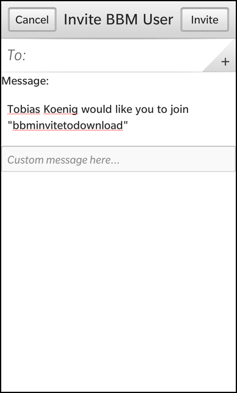

BBM InviteToDownload Example
Files:
- bbminvitetodownload/assets/invite.qml
- bbminvitetodownload/assets/registration.qml
- bbminvitetodownload/src/InviteToDownload.cpp
- bbminvitetodownload/src/InviteToDownload.hpp
- bbminvitetodownload/src/RegistrationHandler.cpp
- bbminvitetodownload/src/RegistrationHandler.hpp
- bbminvitetodownload/src/main.cpp
- bbminvitetodownload/bbminvitetodownload.pro
- bbminvitetodownload/translations/bbminvitetodownload.pro
Description
The BBM InviteToDownload example demonstrates how to send an 'Invite to Download' message for an application through the BBM Social Platform.


Overview
In this example we'll learn how to use the MessageService class of the bb::platform::bbm module to send a 'Invite to Download' message through the BBM Social Platform.
To use the BBM Social Platform, the application must register first. How this is done is explained in bbmregistration and this sample is based on that code. We will describe here everything that needs to be done after the registration was successful.
The business logic of this application is encapsulated in the InviteToDownload class, which is exported to QML under the name '_inviteToDownload'.
UI
The main UI of this application is shown after a successful registration. It consists of two description labels and a Button to invoke the invitation dialog.
Button { horizontalAlignment: HorizontalAlignment.Center text: qsTr("Invite to Download") onClicked: { _inviteToDownload.sendInvite(); } }
Whenever the user clicks on the Button, the sendInvite() method of the InviteToDownload object is invoked.
The InviteToDownload class
The InviteToDownload class encapsulates the sending of the invitation message.
class InviteToDownload : public QObject { Q_OBJECT public: /** * Creates a new 'invite to download' object. * * @param parent The parent object. */ InviteToDownload(bb::platform::bbm::Context &context, QObject *parent = 0); // This method is invoked to open the invitation dialog Q_INVOKABLE void sendInvite(); public Q_SLOTS: // This methods creates the main UI and initializes the message service void show(); private: // The service object to send BBM messages bb::platform::bbm::MessageService* m_messageService; bb::platform::bbm::Context* m_context; };
For that it provides the slot sendInvite() which uses the bb::platform::bbm::MessageService object to invoke the invitation dialog.
void InviteToDownload::show() { // Create the actual main UI QmlDocument* qml = QmlDocument::create("asset:///invite.qml").parent(Application::instance()); qml->setContextProperty("_inviteToDownload", this); AbstractPane* root = qml->createRootObject<AbstractPane>(); Application::instance()->setScene(root); }
The show() slot is invoked after the registration was successful and the user clicked on the 'Continue' button on the registration page (see bbmregistration example). Inside this slot the UI is loaded from the invite.qml file.
void InviteToDownload::sendInvite() { if (!m_messageService) { // Instantiate the MessageService. m_messageService = new bb::platform::bbm::MessageService(m_context, this); } // Trigger the invite to download process. m_messageService->sendDownloadInvitation(); }
When the user clicks on the 'Invite to Download' button, the sendInvite() slot is called, which create a new MessageService object if it does not exists yet, and invokes the sendDownloadInvitation() method that will open the invitation dialog. Note that we use RegistrationHandler::context() here to access the BBM context that is bound against this application.